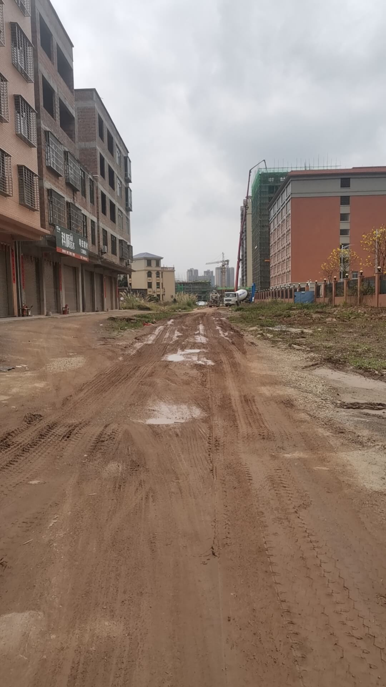
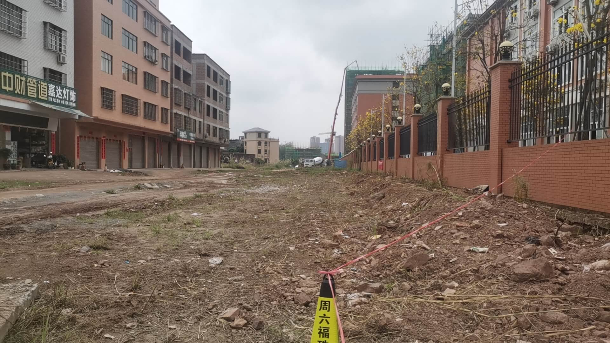
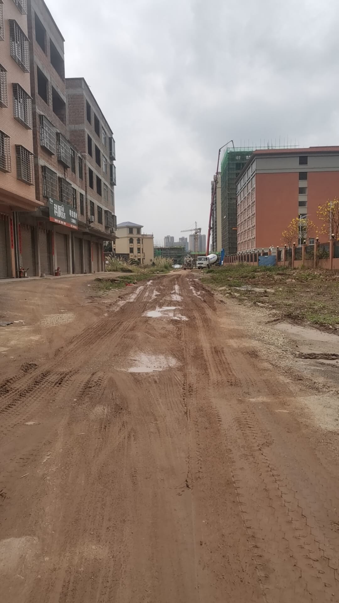
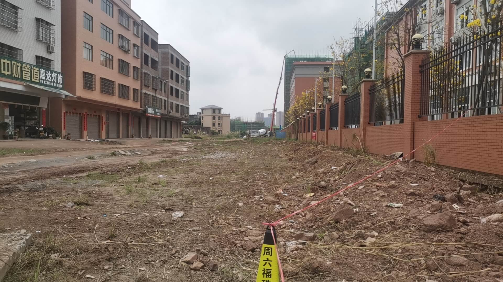

【主要问题】相关道路多年未修，泥泞不堪。百千万工程落实不到位。
【背景】泷州小学是18年左右开始征地，19年投入使用的。征地之后，迁了不少人:部分居民迁到了现在的泷州小学的南边。
【情况】当时政府是承诺会修路的，可是到现在6年过去了，泷州小学的东南角的路口，泷州小学的南边的路 ，这两个重要位置至今没有动工，以至于这个路段晴天风尘仆仆，雨天泥泞不堪，电动车走不了，汽车也走不了。 这个路口，这段路涉及了增诚、大甲、彭屋 几个村 五十多户人 的出行。雨天的泥泞情况简直不堪入目。相关情况如下图:
【诉求】
1、请领导实地走访一下，及时给我个反馈;
2、告诉我有没有计划修，什么时候修，请给我一个明确的期限;
3、如果短期内修不了，有没有什么临时措施?
 



（泥泞路段图片拍摄于23年6月）